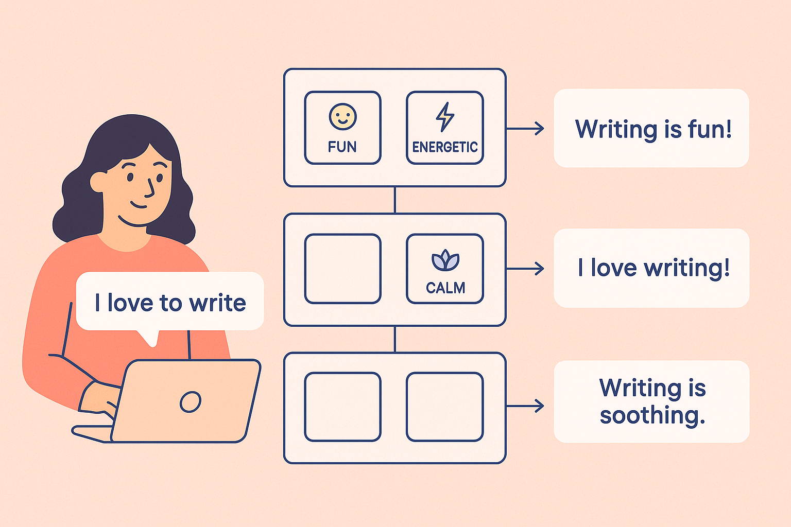

9 Kreativer arbeiten: Schreib-, Ideen- und Lernprompts
9.1 Wie KI deine kreative Superkraft erweitert
Wenn man zum ersten Mal merkt, wie gut KI beim Schreiben, Erfinden und Lernen helfen kann, fühlt es sich fast an wie eine neue Art Magie. Du tippst ein paar Wörter ein – und plötzlich entstehen Texte, Ideen, Erklärungen oder Social-Media-Posts, die besser sind, als du es dir vorher vorstellen konntest. Viele junge Menschen beschreiben diese Erfahrung so:
„Ich wusste gar nicht, dass ich so kreativ sein kann.“
Doch der Trick ist:
Du bist es. Die KI verstärkt nur das, was in dir schon vorhanden ist.
Das Ziel dieses Kapitels ist, dir zu zeigen, wie du ChatGPT und andere Modelle als kreativen Partner nutzen kannst – egal, ob du schreiben willst, Lernideen brauchst oder Inhalte für Social Media planst.
Wir steigen ein mit einer einfachen Erkenntnis:
👉 Kreativität entsteht nicht aus dem Nichts – sie entsteht aus der richtigen Art, Fragen zu stellen.9.2 Warum KI ein perfekter Kreativpartner ist
Kreativität bedeutet nicht, dass man dauernd funkensprühende Ideen hat. Kreativität bedeutet vielmehr, Optionen zu erzeugen – viele Optionen – und daraus eine gute auszuwählen.
Genau das kann KI extrem gut:
👉 Sie produziert Variationen.
👉 Sie schlägt ungewöhnliche Kombinationen vor.
👉 Sie hält nicht an deinen bisherigen Mustern fest.
👉 Sie gibt dir Anfangsimpulse, die du weiterentwickeln kannst.
Und das Beste: KI bewertet dich nicht. Du kannst jede verrückte Idee ausprobieren, ohne Angst, dass sie „peinlich“ ist.
Damit das richtig gut funktioniert, brauchst du allerdings ein paar einfache Prompt-Techniken, die du in diesem Kapitel lernst.
9.3 Kreative Schreibstile: Wie du die KI zu einer anderen Stimme machst
Vielleicht hast du schon bemerkt, dass KI von selbst oft etwas „neutral“ klingt. Nicht schlecht, aber eben nicht wow.
Das ändert sich, sobald du lernst, Stile zu steuern.
👉 Stile wirken wie Filter
Wenn du sagst:
„Schreibe eine Geschichte über ein Haustier, das zaubern kann.“
Dann bekommst du einen Text. Wenn du sagst:
„Schreibe dieselbe Geschichte im Stil von kurzen TikTok-Erzählungen: schnell, witzig, übertrieben, sehr bildhaft.“
Dann bekommt der Text plötzlich Charakter.
👉 Die wichtigsten Stil-Hebel für Schreibprompts
Hier ein paar Formulierungen, die immer funktionieren:
- „im emotionalen Stil von …“
- „in einfachen Worten, jugendlich und locker“
- „mit Humor und lebhaften Bildern“
- „im Ton einer inspirierenden Rede“
- „im journalistischen Kurzformat“
- „wie ein kreativer Instagram-Post“
Diese Stile lassen sich beliebig kombinieren:
„Schreibe einen motivierenden Text über Prüfungsstress im Stil eines ruhigen Podcast-Monologs.“
Oder sogar:
„Schreibe einen Text, der klingt wie eine Mischung aus Tagebucheintrag und Rap-Lyrics – aber verständlich.“
👉 Mini-Experiment
Probiere folgende drei Varianten:
- „Schreibe eine 5-Satz-Motivation für meinen Lernzettel, sachlich und klar.“
- „Schreibe dieselbe Motivation energiegeladen, wie ein Trainer in einem Sportfilm.“
- „Schreibe dieselbe Motivation im Stil einer ruhigen, flüsternden Meditation.“
Du wirst sehen: Derselbe Inhalt, aber drei völlig andere Vibes.

9.4 Lernstrategien mit KI: Lernen wie mit einem Privat-Tutor
Ein riesiger Vorteil von KI ist, dass du Themen lernen kannst, ohne stundenlang verwirrende Texte wälzen zu müssen.
Richtig eingesetzt erklärt die KI dir:
- schwierige Themen in deinem Sprachstil
- Zusammenhänge, die du noch nicht verstanden hast
- Inhalte so, dass sie für dich funktionieren
👉 Der wichtigste Trick: Sag, wie du lernen möchtest
Statt zu fragen:
„Erkläre Photosynthese.“
Sag lieber:
„Erkläre Photosynthese so, als würdest du es einem 14-jährigen Schüler erklären, der visuell lernt und gerne Beispiele mag.“
Oder:
„Erstelle eine Lernübersicht in drei Schwierigkeitsstufen: superleicht, mittel, Expertenlevel.“
Oder:
„Erstelle mir 5 Merksätze, die sich reimen.“
Mit solchen Präzisierungen passt die KI die Erklärung an dein Gehirn an.
👉 Die Vier Lern-Tools, die KI besonders gut kann
1. Vereinfachung
Die KI macht komplexe Themen leicht. Perfekt für Bio, Mathe, Chemie oder Geschichte.
2. Vergleichs-Metaphern
Sag:
„Erklär es so, als wäre es ein Kochrezept / Fußballspiel / Videospiel.“
3. Eigene Beispiele erzeugen
Die KI generiert Übungsaufgaben – passgenau.
4. Schritt-für-Schritt-Strukturen
Wenn du sagst:
„Zerlege das Thema in 7 logisch sortierte Lernbausteine.“
Dann entsteht ein verständlicher Plan, mit dem du tatsächlich lernst.
9.6 Brainstorming mit KI: Ideen im schnellen Flow
Brainstorming funktioniert mit KI sogar besser als mit Menschen. Denn KI kann:
- völlig freie Assoziationen erzeugen
- Ideen strukturieren
- Alternativen anbieten
- Muster erkennen
👉 Der Trick: Verbiete der KI am Anfang jede Bewertung
Sag:
„Gib mir 30 Ideen, ohne sie zu bewerten. Auch verrückte Optionen sind erlaubt.“
Später kannst du sagen:
„Sortiere die Liste nach den besten 5 Ideen für meine Zielgruppe (Schüler, 16 Jahre, kreative Content-Formate).“
Oder:
„Verbinde Idee 4 und Idee 12 zu etwas Neuem.“
So entsteht oft etwas, das du selbst nie erfunden hättest.
9.7 Praxisübungen für Schule & Freizeit
Damit du das alles nicht nur verstehst, sondern wirklich anwenden kannst, kommen hier erste praktische Mini-Übungen.
👉 Übung 1 – Schreibstil-Transformation
Gib folgenden Prompt ein:
„Schreibe diesen Absatz (füge deinen Text ein) in drei Stilen:
- humorvoll und jugendlich
- emotional wie ein Motivationscoach
- sachlich und kompakt“
Vergleiche die Varianten. Welche wirkt für dich am besten?
👉 Übung 2 – Lernstrategie nach deinem Typ
Prompt:
„Erstelle einen Lernplan für das Thema (x) basierend auf dem Lernstil: (visuell, auditiv, kinästhetisch, kombinierter Stil). Bitte mit konkreten Übungen für jeden Punkt.“
👉 Übung 3 – Social-Media-Hooks
Prompt:
„Gib mir 12 Hook-Ideen im TikTok-Stil zum Thema: (Thema einfügen). Bitte kurz, überraschend und zielgruppenorientiert (Alter angeben).“
👉 Übung 4 – Brainstorming mit Regeln
Prompt:
„Erzeuge 40 kreative Ideen für (Thema), ohne sie zu bewerten. Danach sortiere die besten 8 Ideen nach Impact für Zielgruppe (x).“
Dies ist die Grundlage für die folgenden Abschnitte des Kapitels, in denen wir tiefer in kreative Tools, Fortgeschrittenen-Techniken und KI-gestützte Lernstrategien gehen.
Im ersten Teil dieses Kapitels hast du bereits gelernt, wie KI deinen Schreibstil formen kann, wie du mit einfachen Prompt-Tricks kreativer wirst und warum KI eine Art Turbo-Gehirn für Ideen, Inhalte und Lernstrategien ist. Jetzt gehen wir tiefer – aber wie immer ohne komplizierte Theorie. Du bekommst werkzeugartige Prompts, praktische Methoden und viele Beispiele, die du sofort selbst ausprobieren kannst.
Ziel der nachfolgenden Abschnitte des Kapitels:
👉 Du sollst nach diesem Teil das Gefühl haben:
„Ich habe jetzt ein Set an Kreativ-Prompts, die immer funktionieren – egal ob für Schule, Social Media, Lernen oder Freizeit.“
9.8 Brainstorming 2.0: KI als Ideenmotor nutzen
Viele Jugendliche sagen im Chat:
„Mir fällt nix ein. Wie starte ich überhaupt?“
Willkommen im Normalzustand kreativer Arbeit. Ideen sind wie Funken – manche kommen schnell, andere brauchen ein bisschen Luft. KI kann diesen „Luftschub“ liefern: Sie erzeugt Muster, Variationen und Vorschläge, die dein Gehirn weiterdrehen kann.
👉 Die Drei-Stufen-Methode für bessere Ideen
Wenn du nur schreibst:
„Gib mir Ideen“
dann wird die KI sehr generisch antworten.
Besser ist die Drei-Stufen-Methode:
Kontext geben
(„Ich bin 16, brauche Ideen für eine Präsentation über Nachhaltigkeit.“)Rahmen setzen
(„Bitte moderne, ungewöhnliche, jugendnahe Ansätze.“)Form verlangen
(„Liste 7 kurze Schlagworte, danach 3 konkrete Umsetzungsbeispiele.“)
Diese Struktur zwingt die KI, fokussierter zu denken. Das Ergebnis wirkt weniger „zufällig“ und mehr „maßgeschneidert“.
👉 Mini-Übung: Brainstorming verbessern
Schritt A – Einfacher Prompt:
„Ideen für ein Schulprojekt zur Umwelt.“
Schritt B – Verbesserter Prompt:
„Ich bin Schülerin in Klasse 10 und brauche 10 ungewöhnliche Ideen für ein Umwelt-Schulprojekt, das modern, kreativ und realistisch umsetzbar ist. Bitte erst eine Liste mit 10 kurzen Schlagworten, dann 3 ausgearbeitete Vorschläge mit Titel und 2–3 Sätzen Erklärung.“
Vergleich:
👉 Version A = unpräzise, generisch
👉 Version B = klar, zielgerichtet, nützlich
So funktioniert Brainstorming mit KI immer besser.
9.9 Lernstrategien mit KI: Dein persönlicher Lerncoach
KI kann unglaublich gut erklären – aber viele fragen nie:
„Kannst du mir zeigen, wie ich das lernen sollte?“
Hier liegt der Schatz. Du kannst KI wie einen persönlichen Lerncoach nutzen, der dir hilft:
- Lernpläne zu erstellen
- Stoff zusammenzufassen
- schwierige Themen in einfachen Worten zu erklären
- Prüfungsfragen zu formulieren
- Lernkarten zu bauen
- Beispielaufgaben zu generieren
👉 Die 3-Zauberformeln für Lernprompts
„Erkläre es mir so, als wäre ich 12.“
Perfekt, wenn du ein Thema endlich wirklich verstehen willst.„Erstelle 5 Fragen zum Selbsttest.“
Selbsttest-Prompts sind extrem wirksam, weil sie das Gehirn aktivieren.„Baue eine Lernkarte im Stil von Quizlet/Anki.“
KI ist großartig beim Strukturieren.
👉 Beispiel: Geschichte lernen
Prompt:
„Erkläre mir den Versailler Vertrag in einer Sprache, die eine 8.-Klässlerin versteht. Danach gib mir 5 Verständnisfragen und 3 Lernkarten.“
Das Ergebnis? Klar, sauber strukturiert, verständlich. Besser als viele Schulbücher.
👉 Beispiel: Vokabeln lernen
Prompt:
„Erstelle 15 französische Alltagsvokabeln mit Übersetzung, Beispielsatz und Mini-Merkspruch. Formatiere das wie eine zweispaltige Tabelle.“
👉 Beispiel: Für eine Prüfung lernen
Prompt:
„Ich schreibe nächste Woche eine Biologieprüfung über Photosynthese und Zellatmung. Bitte mache mir einen Lernplan für 7 Tage, mit täglichen Mikro-Aufgaben von jeweils 10–15 Minuten.“
Das Entscheidende:
KI denkt für dich mit. Du musst nicht wissen, wie man perfekt lernt – du kannst es dir erklären lassen.
9.11 Schreibprompts, die immer funktionieren
Schreiben ist eines der stärksten Einsatzgebiete von KI. Aber zu viele Menschen nutzen nur die „Frage-und-Antwort“-Variante.
Du kannst mit KI in folgenden Modi arbeiten:
- Ghostwriter (sie schreibt in deinem Stil)
- Co-Autor (ihr entwickelt Texte gemeinsam)
- Editor (sie verbessert deinen Text)
- Ideenlieferant
- Erklärmaschine
👉 universelle Schreibvorlagen
1. „Schreibe diesen Text verständlicher“
Perfekt für Schultexte.
2. „Schreibe diesen Text im Stil von …“
Z. B. „Lockerer Jugendstil“, „Sportkommentar“, „Sachbuch“.
3. „Erstelle drei Varianten“
Die wahrscheinlich nützlichste Schreibtechnik überhaupt.
4. „Schreibe diesen Absatz weiter“
Für kreative Projekte, Storys, Drehbücher.
5. „Verbessere diesen Text und erkläre mir, was du verändert hast.“
Super für echtes Lernen.
👉 Beispiel: Deutschaufsatz
Prompt:
„Hier ist mein Absatz für einen Deutschaufsatz. Bitte verbessere ihn stilistisch, halte aber meinen Ton. Danach gib mir Feedback in 3 klaren Bullet-Points.“
Das Ergebnis ist oft so gut, dass man direkt versteht:
👉 KI ist wie ein persönlicher Deutschlehrer — der nie müde wird.
9.12 Praxisübungen für Schule & Freizeit
Hier bekommst du sechs sofort einsetzbare Übungen, die dir helfen, KI-Inhalte schneller und kreativer zu nutzen.
👉 Übung 1: Schreibe drei verschiedene Hooks
Prompt:
„Schreibe mir 3 alternative Hooks für ein TikTok-Video über Prüfungsangst, jeweils in einem anderen Stil: lustig, ernst, motivierend.“
👉 Übung 2: Erkläre ein schwieriges Thema simpel
Prompt:
„Erkläre das Thema ‚Künstliche Intelligenz‘ so, dass ein 10-Jähriger es versteht. Dann formuliere eine Erklärung für ein Schulreferat für die 11. Klasse.“
👉 Übung 3: Mini-Geschichten für kreative Warm-ups
Prompt:
„Erfinde 5 ultra-kurze Geschichten (je 2–3 Sätze) zu zufälligen Wörtern: Regen – Handy – Museum.“
👉 Übung 4: Meme-Ideen erzeugen
Prompt:
„Erstelle 10 Meme-Ideen über ‚Lernen für Prüfungen‘ mit kurzer Beschreibung des Bildaufbaus.“
👉 Übung 5: Lernkarten erstellen
Prompt:
„Baue 10 Lernkarten über Brüche und Dezimalzahlen für die 7. Klasse. Form: ‚Vorderseite: Frage‘, ‚Rückseite: Antwort + kurze Erklärung‘.“
👉 Übung 6: Schreibstil imitieren
Prompt:
„Analysiere meinen Text und gib mir 5 Merkmale meines Stils. Danach schreibe einen neuen Absatz, der zu diesen Merkmalen passt.“
Das Entscheidende ist:
Du übst nicht einfach – du lernst, KI für deine Kreativität zu steuern. Das ist Prompt Engineering in seiner praktischsten Form.
9.13 Der wichtigste Gedanke dieses Kapitels
Wenn du KI kreativ nutzt – sei es zum Schreiben, Lernen oder Brainstormen –, dann geht es nicht darum, dass die KI „für dich“ denkt.
Es geht darum, dass sie dir hilft, schneller und klarer zu denken, indem sie Ideen sortiert, strukturiert, erweitert und präzisiert.
Du gibst die Richtung vor – KI liefert das Brennmaterial.
9.14 Ausblick auf Kapitel 10
Im nächsten Kapitel schauen wir hinter die Kulissen: Warum KI manchmal falsch liegt – und wie du sie wieder auf den richtigen Weg bringst. Du lernst, wie du typische Fehler erkennst, wie du Antworten verifizierst und wie du ChatGPT dazu bringst, seine eigenen Aussagen zu prüfen. Mit einem kleinen Workflow – “Trust, but verify” – bekommst du ein Werkzeug an die Hand, das jede deiner kreativen oder fachlichen Aufgaben sicherer und zuverlässiger macht.
9.5 Social-Media-Ideen mit KI: Kreativität auf Knopfdruck
Viele Jugendliche nutzen ChatGPT, um bessere Posts, Captions oder Video-Ideen zu entwickeln. Richtig eingesetzt, kann KI:
👉 Die drei wichtigsten Social-Media-Prompt-Hebel
1. „Schreibe für Plattform X“
TikTok klingt anders als Instagram. Instagram klingt anders als YouTube. YouTube klingt anders als Snapchat.
Sag also immer:
2. „Gib mir 10 Varianten“
Variationen sind Gold wert.
Du wählst einfach die beste aus.
3. „Kurz, klar, sofort verständlich“
KI neigt zu langen Sätzen. Sag einfach:
Und du bekommst Content, der auf Social Media funktioniert.